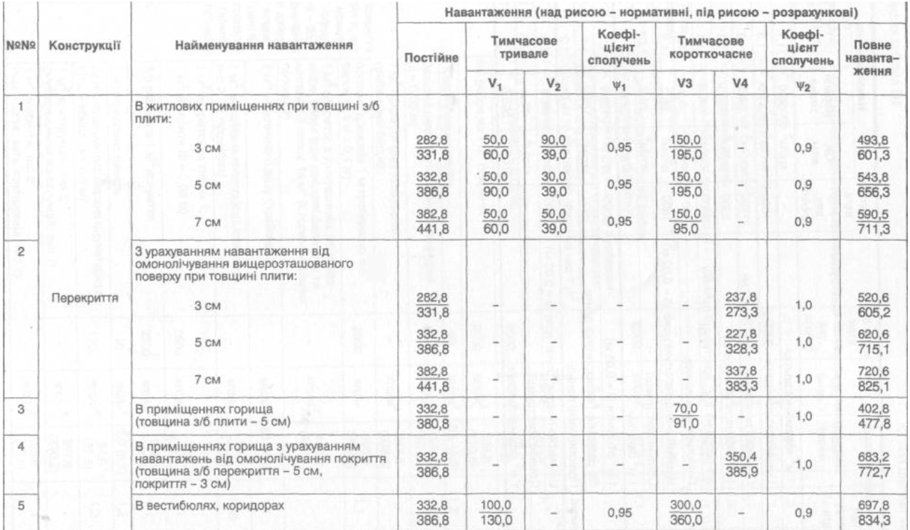

Описати веб-сторінку таблицею норми навантажень. Вигляд таблиці:
| №№ | Конструкції | Найменування навантаження | Навантаження (над рисою - нормативні, під рисою - розрахункові) | |||||||
|---|---|---|---|---|---|---|---|---|---|---|
| Постійне | Тимчасово тривале | Коефіцієнт сполучень | Тимчасове короткочасне | Коефіцієнт сполучень | Повне навантаження | |||||
| V1 | V2 | w1 | V3 | V4 | w2 | |||||
| 1 | Перекриття | У житлових приміщеннях при товщині плити:
3 см 5 см 7 см |
282.8 332.8 441.2 |
282.8 332.8 441.2 |
282.8 332.8 441.2 |
0.95 0.95 0.95 |
282.8 332.8 441.2 |
- - - |
0.9 0.9 0.9 |
282.8 332.8 441.2 |
| 2 | З урахуванням навантаження від омонолічування
вищерозташованого поверху при товщині плити:
3 см 5 см 7 см |
282.8 332.8 441.2 |
- - - | - - - | - - - | - - - | 282.8 332.8 441.2 |
1.0 1.0 1.0 |
282.8 332.8 441.2 |
|
| 3 | В приміщеннях горища (товщина з/б плити - 5 см) | 332.8 | - |
- |
- |
70.0 | - |
1.0 | 402.8 | |
| 4 | В приміщеннях горища з урахуванням навантажень від омонолічування покриття (товщина з/б перекриття - 5 см, покриття - 3 см) | 332.8 | - |
- |
- |
- |
350.4 | 1.0 | 683.2 | |
| 5 | У вестибюлях, коридорах | 332.8 | 100.0 | - |
0.95 | 300.0 | - |
0.9 | 697.8 | |